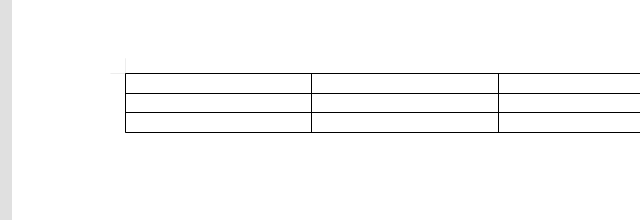
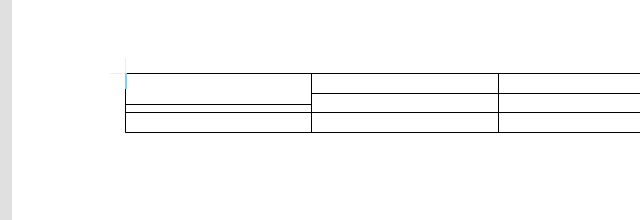



| 항목 | 상세 | 화면 | |
|---|---|---|---|
| 일반이동 — Shift 없이 경계선 드래그 — 그 선 전체가 움직인다. 신선한 표의 가로선은 줄일 여유가 없어 무동작이 정상. | |||
| ✓ | 가로 내부선1 ↓ [신선=무동작] | 세그 이동 0.0/0.0/0.0 (기대 0) 표 559.4x59.4→559.4x59.4 | 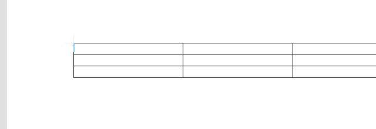 |
| ✓ | 가로 내부선1 ↑ [신선=무동작] | 세그 이동 0.0/0.0/0.0 (기대 0) 표 559.4x59.4→559.4x59.4 | |
| ✓ | 가로 내부선2 ↓ [신선=무동작] | 세그 이동 0.0/0.0/0.0 (기대 0) 표 559.4x59.4→559.4x59.4 |  |
| ✓ | 가로 내부선2 ↑ [신선=무동작] | 세그 이동 0.0/0.0/0.0 (기대 0) 표 559.4x59.4→559.4x59.4 |  |
| ✓ | 세로 내부선1 → | 세그 이동 8.8/8.8/8.8 (기대 8) 표 559.4x59.4→559.4x59.4 | |
| ✓ | 세로 내부선1 ← | 세그 이동 -7.2/-7.2/-7.2 (기대 -8) 표 559.4x59.4→559.4x59.4 | 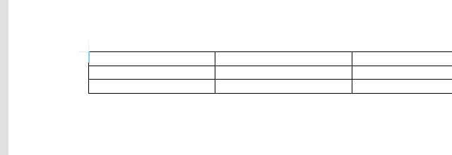 |
| ✓ | 세로 내부선2 → | 세그 이동 8.4/8.4/8.4 (기대 8) 표 559.4x59.4→559.4x59.4 | |
| ✓ | 세로 내부선2 ← | 세그 이동 -7.6/-7.6/-7.6 (기대 -8) 표 559.4x59.4→559.4x59.4 | |
| 어긋단발 — Shift+드래그 한 칸 어긋내기 — 잡은 칸의 경계만 12px, 표 크기 불변. | |||
| ✓ | 하(0,0) +12 | 이동 11.9 표 59.4→59.4 |  |
| ✓ | 하(0,0) −12 | 이동 -12.1 표 59.4→59.4 | 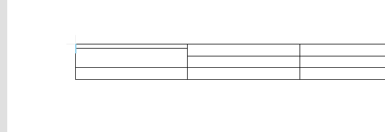 |
| ✓ | 하(0,1) +12 | 이동 11.9 표 59.4→59.4 | 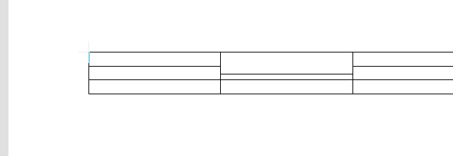 |
| ✓ | 하(0,1) −12 | 이동 -12.1 표 59.4→59.4 | 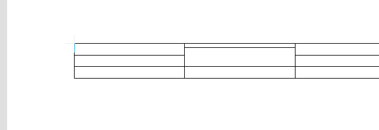 |
| ✓ | 하(0,2) +12 | 이동 11.9 표 59.4→59.4 | 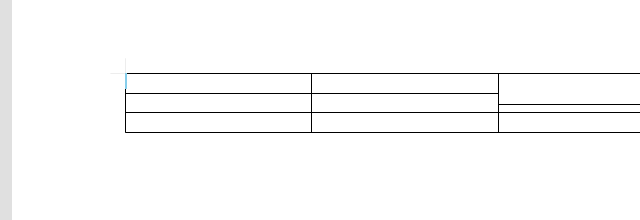 |
| ✓ | 하(0,2) −12 | 이동 -12.1 표 59.4→59.4 | 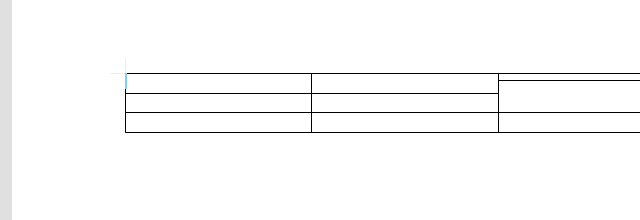 |
| ✓ | 하(1,0) +12 | 이동 11.1 표 59.4→59.4 | 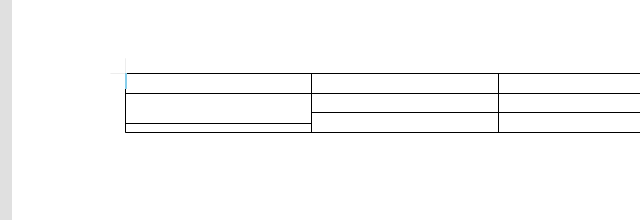 |
| ✓ | 하(1,0) −12 | 이동 -12.9 표 59.4→59.4 | 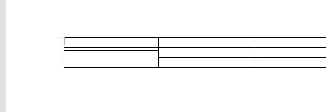 |
| ✓ | 하(1,1) +12 | 이동 11.1 표 59.4→59.4 | 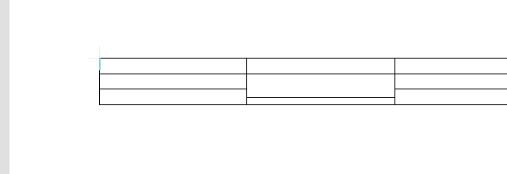 |
| ✓ | 하(1,1) −12 | 이동 -12.9 표 59.4→59.4 | 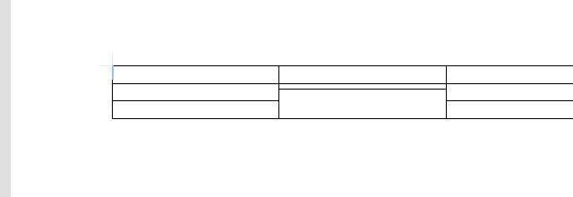 |
| ✓ | 하(1,2) +12 | 이동 11.1 표 59.4→59.4 | 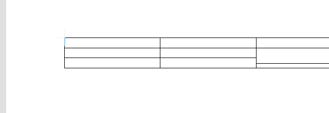 |
| ✓ | 하(1,2) −12 | 이동 -12.9 표 59.4→59.4 | 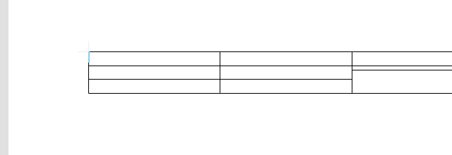 |
| ✓ | 우(0,0) +12 | 이동 12.8 표 59.4→59.4 | |
| ✓ | 우(0,0) −12 | 이동 -11.2 표 59.4→59.4 | |
| ✓ | 우(1,0) +12 | 이동 12.8 표 59.4→59.4 | |
| ✓ | 우(1,0) −12 | 이동 -11.2 표 59.4→59.4 | |
| ✓ | 우(2,0) +12 | 이동 12.8 표 59.4→59.4 | |
| ✓ | 우(2,0) −12 | 이동 -11.2 표 59.4→59.4 | |
| ✓ | 우(0,1) +12 | 이동 12.4 표 59.4→59.4 | |
| ✓ | 우(0,1) −12 | 이동 -11.6 표 59.4→59.4 | |
| ✓ | 우(1,1) +12 | 이동 12.4 표 59.4→59.4 | |
| ✓ | 우(1,1) −12 | 이동 -11.6 표 59.4→59.4 | |
| ✓ | 우(2,1) +12 | 이동 12.4 표 59.4→59.4 | 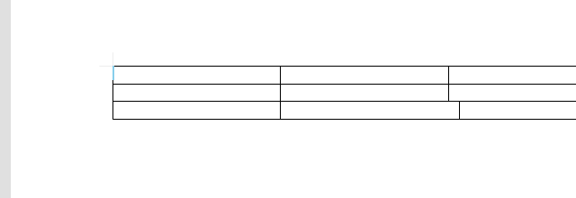 |
| ✓ | 우(2,1) −12 | 이동 -11.6 표 59.4→59.4 | |
| 어긋왕복 — 어긋낸 경계를 반대로 12px — 원래 표로 완전 복귀(치유). | |||
| ✓ | 하(0,0) +→복귀 | 셀 9 표 59.4 |  |
| ✓ | 하(0,0) −→복귀 | 셀 9 표 59.4 |  |
| ✓ | 하(0,1) +→복귀 | 셀 9 표 59.4 |  |
| ✓ | 하(0,1) −→복귀 | 셀 9 표 59.4 |  |
| ✓ | 하(0,2) +→복귀 | 셀 9 표 59.4 |  |
| ✓ | 하(0,2) −→복귀 | 셀 9 표 59.4 |  |
| ✓ | 하(1,0) +→복귀 | 셀 9 표 59.4 |  |
| ✓ | 하(1,0) −→복귀 | 셀 9 표 59.4 |  |
| ✓ | 하(1,1) +→복귀 | 셀 9 표 59.4 |  |
| ✓ | 하(1,1) −→복귀 | 셀 9 표 59.4 |  |
| ✓ | 하(1,2) +→복귀 | 셀 9 표 59.4 |  |
| ✓ | 하(1,2) −→복귀 | 셀 9 표 59.4 |  |
| ✓ | 우(0,0) +→복귀 | 셀 9 표 59.4 |  |
| ✓ | 우(0,0) −→복귀 | 셀 9 표 59.4 |  |
| ✓ | 우(1,0) +→복귀 | 셀 9 표 59.4 |  |
| ✓ | 우(1,0) −→복귀 | 셀 9 표 59.4 |  |
| ✓ | 우(2,0) +→복귀 | 셀 9 표 59.4 |  |
| ✓ | 우(2,0) −→복귀 | 셀 9 표 59.4 |  |
| ✓ | 우(0,1) +→복귀 | 셀 9 표 59.4 | |
| ✓ | 우(0,1) −→복귀 | 셀 9 표 59.4 |  |
| ✓ | 우(1,1) +→복귀 | 셀 9 표 59.4 |  |
| ✓ | 우(1,1) −→복귀 | 셀 9 표 59.4 |  |
| ✓ | 우(2,1) +→복귀 | 셀 9 표 59.4 |  |
| ✓ | 우(2,1) −→복귀 | 셀 9 표 59.4 |  |
| 연쇄 — 첫 행을 어긋낸 뒤 아래 행도 같은 방식으로 — 신고 ② 시나리오. | |||
| ✓ | 마우스 열0 위→아래 순차 | 2스텝 정상 | 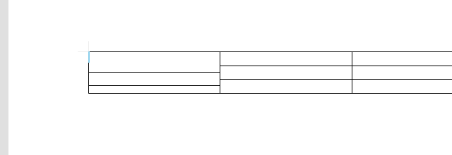 |
| ✓ | 마우스 열1 위→아래 순차 | 2스텝 정상 | 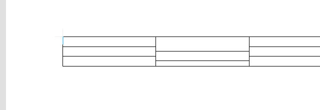 |
| ✓ | 마우스 열2 위→아래 순차 | 2스텝 정상 | 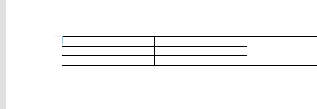 |
| 클릭진입 — 어긋낸 표의 아무 셀이나 클릭하면 커서가 들어가는가. | |||
| ✓ | 시각(0,0) | cellIndex=0 | 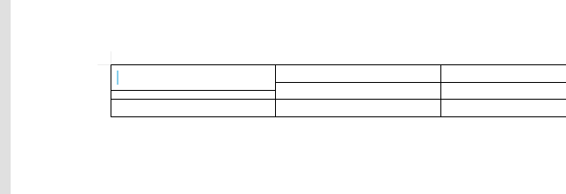 |
| ✓ | 시각(0,1) | cellIndex=1 | 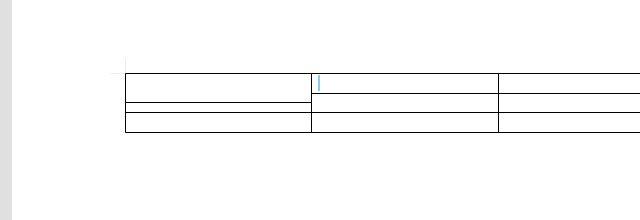 |
| ✓ | 시각(0,2) | cellIndex=2 | 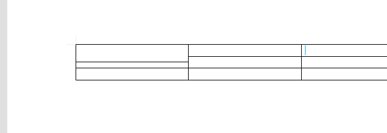 |
| ✓ | 시각(1,0) | cellIndex=2 | 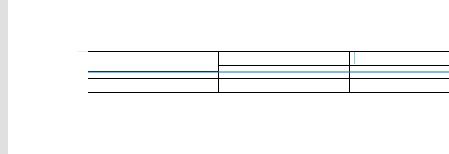 |
| ✓ | 시각(1,1) | cellIndex=3 | 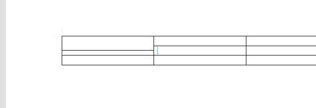 |
| ✓ | 시각(1,2) | cellIndex=4 | 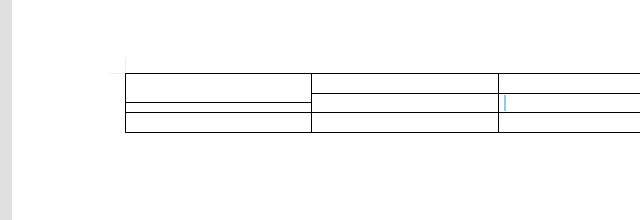 |
| ✓ | 시각(2,0) | cellIndex=6 | 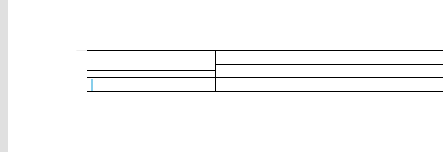 |
| ✓ | 시각(2,1) | cellIndex=7 | 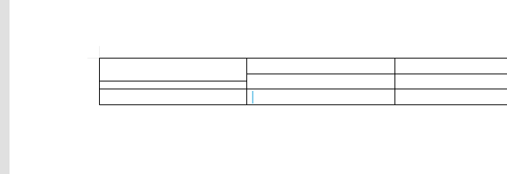 |
| ✓ | 시각(2,2) | cellIndex=8 | 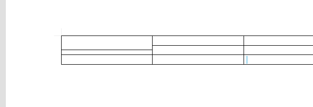 |
| 항목 | 상세 | 화면 | |
|---|---|---|---|
| 어긋키보드 — 셀에서 F5 → Shift+화살표 — 키보드 한 칸 어긋내기. 마지막 행·열의 바깥 방향은 무동작이 정상. | |||
| ✓ | (0,0) ArrowDown | 이동 3.8 표 59.4→59.4 | 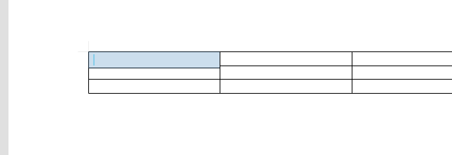 |
| ✓ | (0,0) ArrowUp | 이동 -3.8 표 59.4→59.4 | 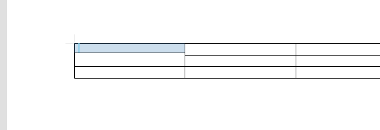 |
| ✓ | (0,0) ArrowRight | 이동 3.7 표 59.4→59.4 | 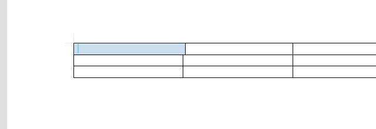 |
| ✓ | (0,0) ArrowLeft | 이동 -3.8 표 59.4→59.4 | 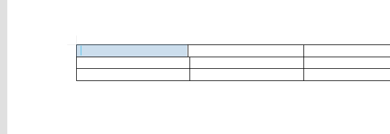 |
| ✓ | (0,1) ArrowDown | 이동 3.8 표 59.4→59.4 | 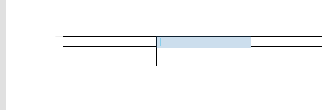 |
| ✓ | (0,1) ArrowUp | 이동 -3.8 표 59.4→59.4 | 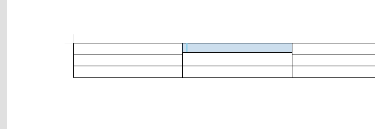 |
| ✓ | (0,1) ArrowRight | 이동 3.7 표 59.4→59.4 | 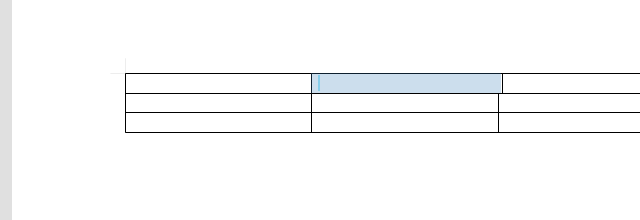 |
| ✓ | (0,1) ArrowLeft | 이동 -3.8 표 59.4→59.4 | |
| ✓ | (0,2) ArrowDown | 이동 3.8 표 59.4→59.4 | 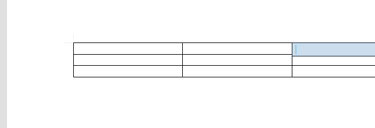 |
| ✓ | (0,2) ArrowUp | 이동 -3.8 표 59.4→59.4 | 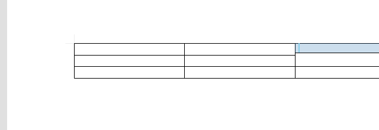 |
| ✓ | (0,2) ArrowRight [바깥=무동작] | 이동 0.0 표 59.4→59.4 |  |
| ✓ | (0,2) ArrowLeft [바깥=무동작] | 이동 0.0 표 59.4→59.4 | |
| ✓ | (1,0) ArrowDown | 이동 3.8 표 59.4→59.4 | 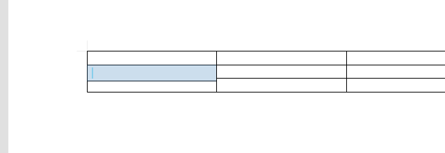 |
| ✓ | (1,0) ArrowUp | 이동 -3.8 표 59.4→59.4 | 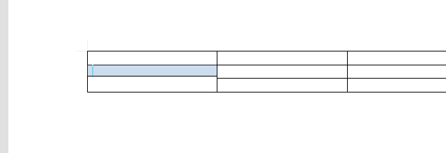 |
| ✓ | (1,0) ArrowRight | 이동 3.7 표 59.4→59.4 | 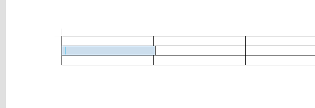 |
| ✓ | (1,0) ArrowLeft | 이동 -3.8 표 59.4→59.4 | 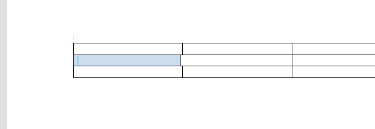 |
| ✓ | (1,1) ArrowDown | 이동 3.8 표 59.4→59.4 | 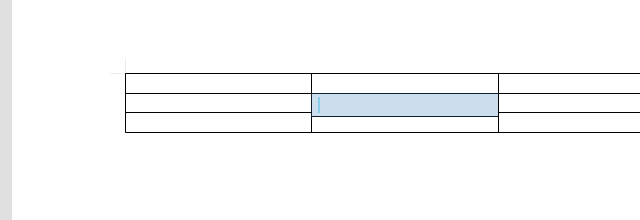 |
| ✓ | (1,1) ArrowUp | 이동 -3.8 표 59.4→59.4 | 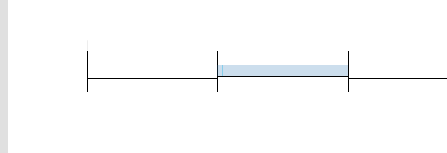 |
| ✓ | (1,1) ArrowRight | 이동 3.7 표 59.4→59.4 | 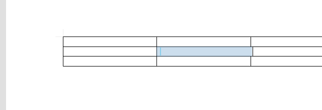 |
| ✓ | (1,1) ArrowLeft | 이동 -3.8 표 59.4→59.4 | 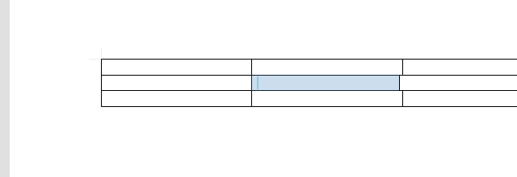 |
| ✓ | (1,2) ArrowDown | 이동 3.8 표 59.4→59.4 | 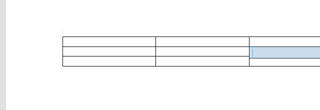 |
| ✓ | (1,2) ArrowUp | 이동 -3.8 표 59.4→59.4 | |
| ✓ | (1,2) ArrowRight [바깥=무동작] | 이동 0.0 표 59.4→59.4 | 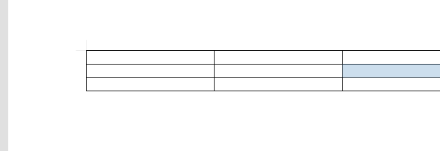 |
| ✓ | (1,2) ArrowLeft [바깥=무동작] | 이동 0.0 표 59.4→59.4 | 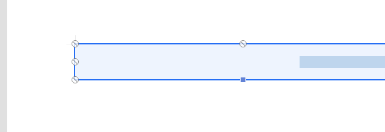 |
| ✓ | (2,0) ArrowDown [바깥=무동작] | 이동 0.0 표 59.4→59.4 |  |
| ✓ | (2,0) ArrowUp [바깥=무동작] | 이동 0.0 표 59.4→59.4 | 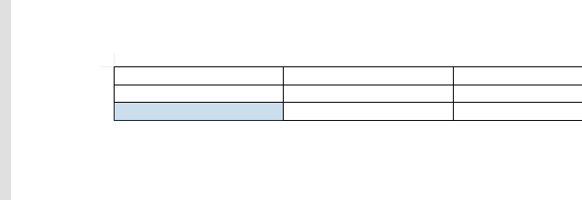 |
| ✓ | (2,0) ArrowRight | 이동 3.7 표 59.4→59.4 | 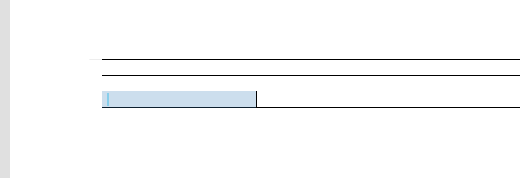 |
| ✓ | (2,0) ArrowLeft | 이동 -3.8 표 59.4→59.4 | |
| ✓ | (2,1) ArrowDown [바깥=무동작] | 이동 0.0 표 59.4→59.4 | |
| ✓ | (2,1) ArrowUp [바깥=무동작] | 이동 0.0 표 59.4→59.4 |  |
| ✓ | (2,1) ArrowRight | 이동 3.7 표 59.4→59.4 | |
| ✓ | (2,1) ArrowLeft | 이동 -3.8 표 59.4→59.4 | |
| ✓ | (2,2) ArrowDown [바깥=무동작] | 이동 0.0 표 59.4→59.4 | |
| ✓ | (2,2) ArrowUp [바깥=무동작] | 이동 0.0 표 59.4→59.4 |  |
| ✓ | (2,2) ArrowRight [바깥=무동작] | 이동 0.0 표 59.4→59.4 | |
| ✓ | (2,2) ArrowLeft [바깥=무동작] | 이동 0.0 표 59.4→59.4 |  |
| 연쇄 — 첫 행을 어긋낸 뒤 아래 행도 같은 방식으로 — 신고 ② 시나리오. | |||
| ✓ | 키보드 열0 위→아래 순차 | 2스텝 정상 | |
| ✓ | 키보드 열1 위→아래 순차 | 2스텝 정상 | |
| ✓ | 키보드 열2 위→아래 순차 | 2스텝 정상 | |
| F5이동 — 어긋낸 표에서 F5 블록 이동으로 표 전체를 돌 수 있는가 — 신고 ① 시나리오. | |||
| ✓ | 어긋낸 표 S자 순회 8스텝 | 전 스텝 이동 | |
| ✓ | 시각(1,0)→위(병합 진입) | 2,0-2,0 → 1,0-1,0 | |
| ✓ | 시각(0,0)→아래 연속(끝까지) | ok ok 정지@3,0-3,0 최종 3,0-3,0 |  |
| 상태 | 항목 | 메모(직접입력) |
|---|